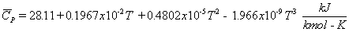
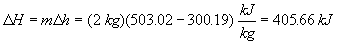
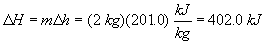
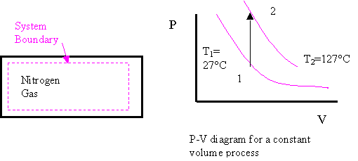
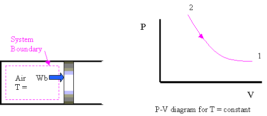
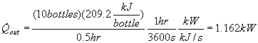
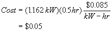

MODULE 6: SPECIFIC HEATS
(fragments of the CD that comes with
Cengel&Boles's book "Thermodynamics", 3-d edition, McGraw-Hill,
1998)
Example 1
Two kilograms of air are heated from 300 to 500 K. Find the change in enthalpy by assuming
a. Empirical specific heat data.
b. Air tables.
c. Specific heat at the average temperature.
d. Use the 300 K value for the specific heat.
a. Table A-2c gives the molar specific heat at constant pressure for air as

The enthalpy change per unit mole is
b. Using the air tables, Table A-17, at T1 = 300K, h1 = 300.19 kJ/kg and at T2 = 500K, h2 = 503.02 kJ/kg

The results of parts a and b would be identical if Table A-17 had been based on the same specific heat function listed in Table A-2.
c. Let's use a constant specific heat at the average temperature.
Tave = (300 + 500)K/2 = 400 K. At Tave , Table A-2 gives CP = 1.013 kJ/(kg-K).
For CP = constant,
d. Using the 300 K value from Table A-2a, CP = 1.005 kJ/kg K.
For CP = constant,

Example 2
A tank contains nitrogen at 27ºC. The temperature rises to 127ºC by heat transfer to the system. Find the heat transfer and the ratio of the final pressure to the initial pressure.
System: Nitrogen in the tank.

Property Relation: Nitrogen is an ideal gas. The ideal gas property relations apply. Let's assume constant specific heats. (You are encouraged to rework this problem using variable specific heat data)
Process: Tanks are rigid vessels; therefore, the process is constant volume.
Conservation of Mass:
Using the ideal gas equation of state,
Since R is the particular gas constant, and the process is constant volume,
Conservation of Energy:
The First Law Closed System is
For nitrogen undergoing a constant volume process (dV = 0), then the net work is (Wother = 0)
Using the ideal gas relations with Wnet = 0, the first law becomes (constant specific heats)
The heat transfer per unit mass is
Example 3
Air is expanded isothermally at 100ºC from 0.4 MPa to 0.1 MPa. Find the ratio of the final to initial volume, the heat transfer, and work.
System: Air contained in a piston-cylinder device, a closed system.
Process: Constant temperature

Property Relation: Assume air is an ideal gas and use the ideal gas property relations with constant specific heats.
Conservation of Energy:
The system mass is constant but is not given and cannot be calculated; therefore, let's find the work and heat transfer per unit mass.
Work Calculation:
Conservation of mass: For an ideal gas in a closed system (mass = constant), we have
Since the R's cancel and T2 = T1
Then the work expression per unit mass becomes
The net work per unit mass is
Now to continue with the conservation of energy to find the heat transfer. Since T2 = T1=constant,
So, the heat transfer per unit mass is
The heat transferred to the air during an isothermal expansion process is
equal to the work done.
Example 4
A two-liter bottle of your favorite beverage has just been removed from the trunk of your car. The temperature of the beverage is 35ºC, and you always drink your beverage at 10ºC.
a. How much heat energy must be removed from your two liters of beverage?
b. You are having a party and need to cool 10 of these two-liter bottles in one-half hour. What rate of heat removal, in kW, is required? Assuming that your refrigerator can accomplish this and that electricity costs 8.5 cents per kW-hr, how much will it cost to cool these 10 bottles?
System: The liquid in the constant volume, closed system container
Property Relation: Incompressible liquid relations, let's assume that the beverage is mostly water and takes on the properties of liquid water. The specific volume is 0.001 m3/kg, C = 4.184 kJ/kg K.
Process: Constant volume
Conservation of Mass:
Conservation of Energy:
The First Law Closed System is
Since the container is constant volume and there is no "other" work done on the container during the cooling process, we have
The only energy crossing the boundary is the heat transfer leaving the container. Assuming the container to be stationary, the conservation of energy becomes
The heat transfer rate to cool the 10 bottles in one-half hour is

